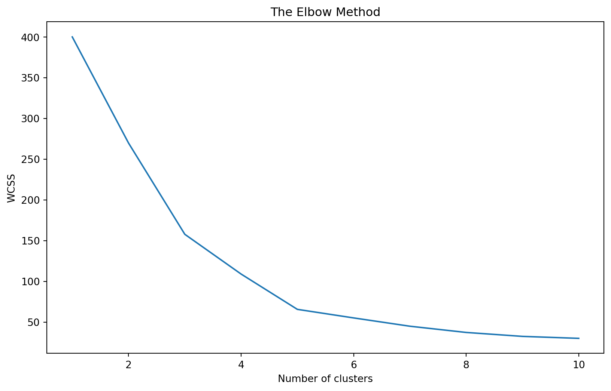
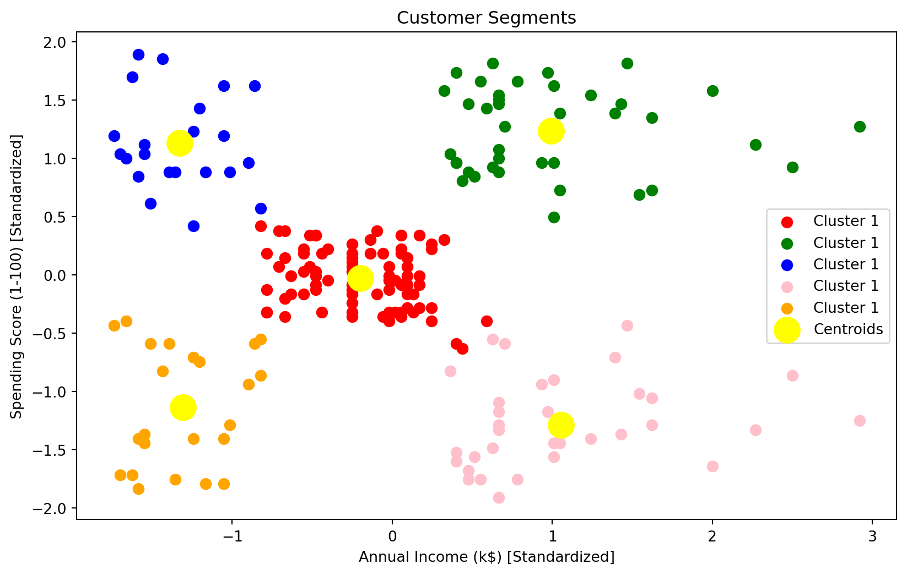
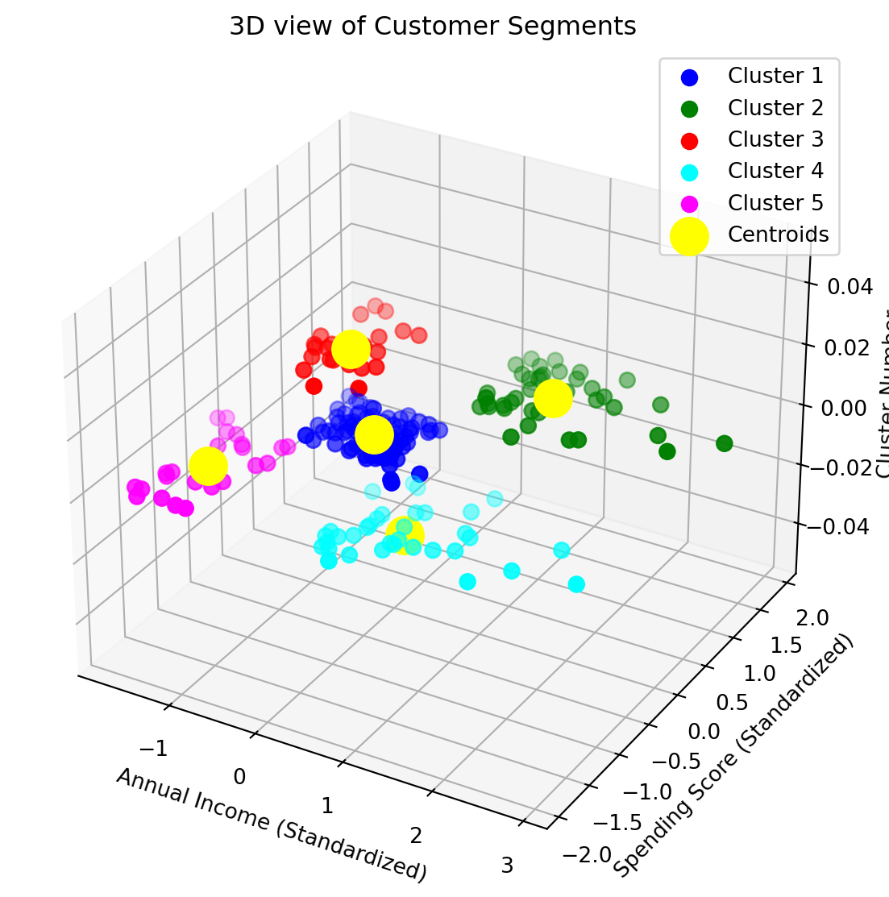
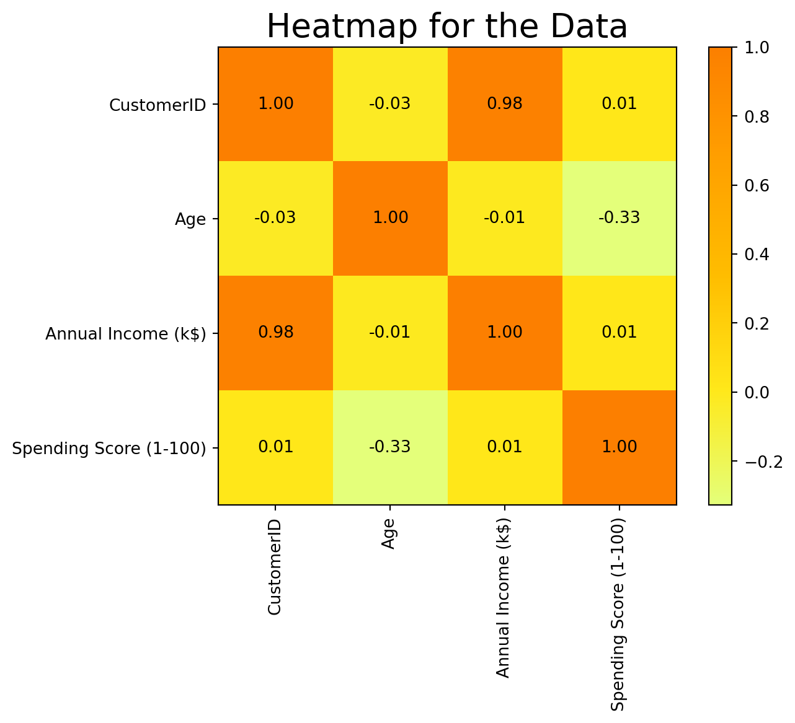
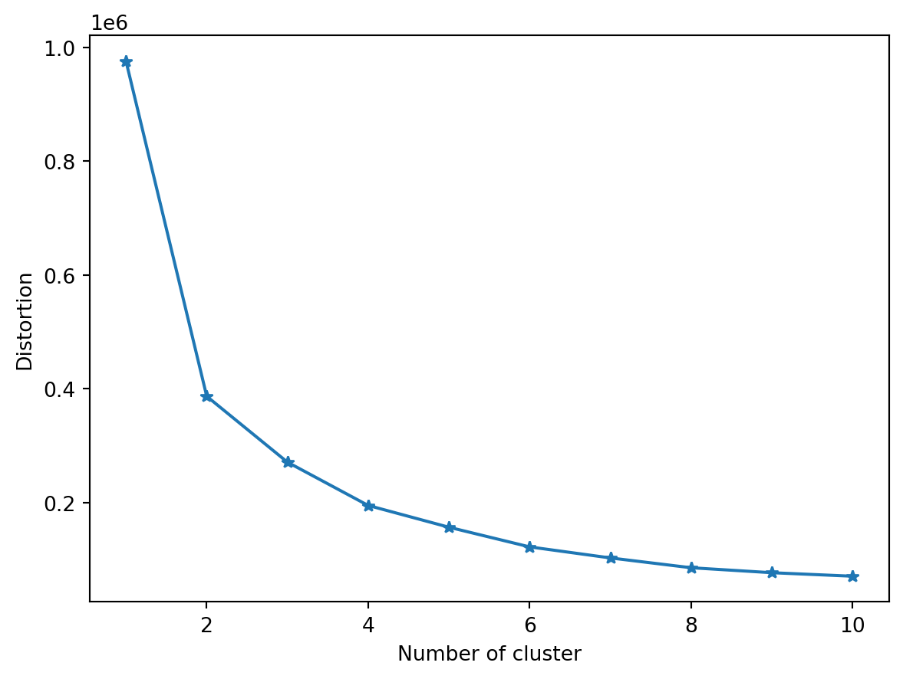
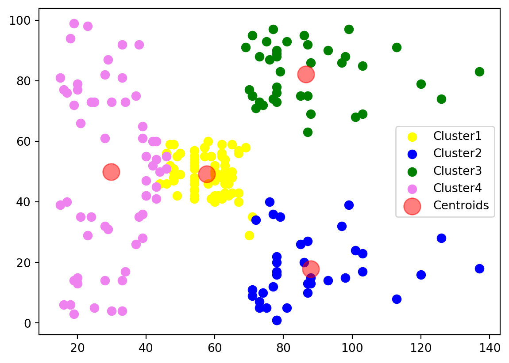
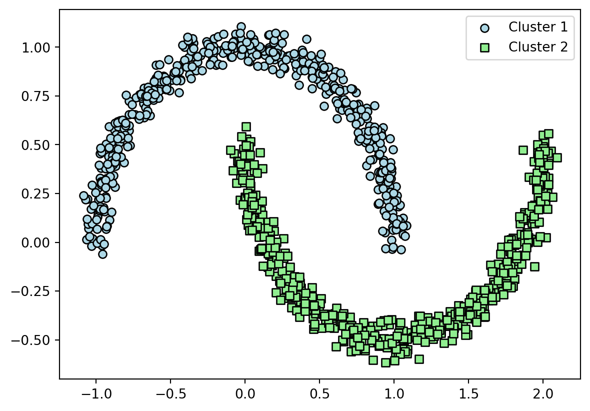
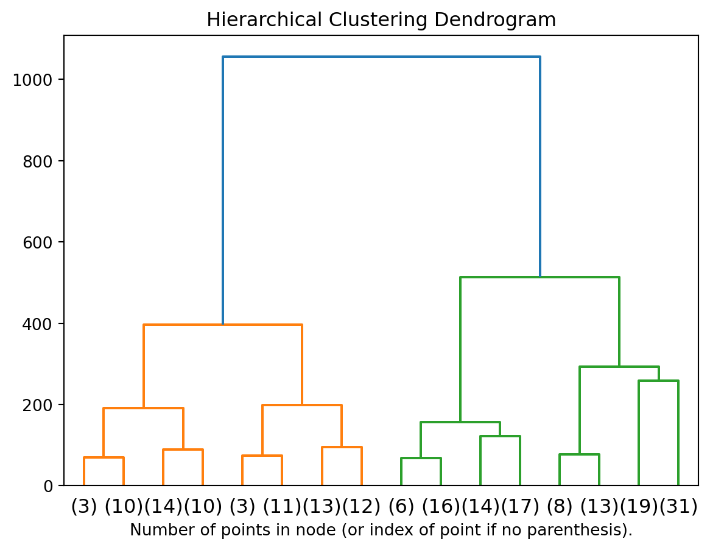

Code
import pandas as pd
import numpy as np
import matplotlib.pyplot as plt
from sklearn.cluster import KMeans
from sklearn.preprocessing import StandardScalerSwapnil Singh
November 5, 2023
In the diverse landscape of machine learning, clustering stands out as a powerful tool for uncovering hidden structures in data. Unlike supervised learning, clustering is a form of unsupervised learning - it doesn’t rely on predefined labels. Instead, it groups the data based on similarity. This blog post delves into the world of clustering, using a real-world dataset as our guide. We will explore the K-Means algorithm, a popular clustering technique, complete with Python code and visualizations to illuminate our journey.
Clustering aims to segregate data into distinct groups or ‘clusters,’ such that data points in the same group are more similar to each other than those in other groups. It’s extensively used in market segmentation, anomaly detection, search result grouping, and image segmentation.
K-Means is a simple yet powerful clustering algorithm. It partitions the data into K distinct, non-overlapping subgroups (clusters), with each data point belonging to the cluster with the nearest mean. The algorithm involves the following steps:
Initialization: K initial ‘centroids’ (mean points) are randomly selected from the data points.
Assignment: Each data point is assigned to its nearest centroid, based on the squared Euclidean distance.
Update: The centroids are recalculated as the mean of all data points assigned to that cluster.
Repeat: Steps 2 and 3 are repeated until the centroids no longer move significantly.
To illustrate clustering in action, we’ll use a customer dataset containing spending scores and annual incomes. Our goal is to segment customers into distinct groups based on these attributes.
First, we import necessary Python libraries:
We’ll use a dataset that contains customer information like spending scores and annual incomes:
With our data prepared, we can now apply the K-Means algorithm:
# Determine the optimal number of clusters
wcss = []
for i in range(1, 11):
kmeans = KMeans(n_clusters=i, init='k-means++', random_state=42)
kmeans.fit(X_scaled)
wcss.append(kmeans.inertia_)
# Plot the Elbow Method graph
plt.figure(figsize=(10,6))
plt.plot(range(1, 11), wcss)
plt.title('The Elbow Method')
plt.xlabel('Number of clusters')
plt.ylabel('WCSS')
plt.show()
# Apply K-Means to the dataset
kmeans = KMeans(n_clusters=5, init='k-means++', random_state=42)
y_kmeans = kmeans.fit_predict(X_scaled)/Library/Frameworks/Python.framework/Versions/3.11/lib/python3.11/site-packages/sklearn/cluster/_kmeans.py:1412: FutureWarning:
The default value of `n_init` will change from 10 to 'auto' in 1.4. Set the value of `n_init` explicitly to suppress the warning
/Library/Frameworks/Python.framework/Versions/3.11/lib/python3.11/site-packages/sklearn/cluster/_kmeans.py:1412: FutureWarning:
The default value of `n_init` will change from 10 to 'auto' in 1.4. Set the value of `n_init` explicitly to suppress the warning
/Library/Frameworks/Python.framework/Versions/3.11/lib/python3.11/site-packages/sklearn/cluster/_kmeans.py:1412: FutureWarning:
The default value of `n_init` will change from 10 to 'auto' in 1.4. Set the value of `n_init` explicitly to suppress the warning
/Library/Frameworks/Python.framework/Versions/3.11/lib/python3.11/site-packages/sklearn/cluster/_kmeans.py:1412: FutureWarning:
The default value of `n_init` will change from 10 to 'auto' in 1.4. Set the value of `n_init` explicitly to suppress the warning
/Library/Frameworks/Python.framework/Versions/3.11/lib/python3.11/site-packages/sklearn/cluster/_kmeans.py:1412: FutureWarning:
The default value of `n_init` will change from 10 to 'auto' in 1.4. Set the value of `n_init` explicitly to suppress the warning
/Library/Frameworks/Python.framework/Versions/3.11/lib/python3.11/site-packages/sklearn/cluster/_kmeans.py:1412: FutureWarning:
The default value of `n_init` will change from 10 to 'auto' in 1.4. Set the value of `n_init` explicitly to suppress the warning
/Library/Frameworks/Python.framework/Versions/3.11/lib/python3.11/site-packages/sklearn/cluster/_kmeans.py:1412: FutureWarning:
The default value of `n_init` will change from 10 to 'auto' in 1.4. Set the value of `n_init` explicitly to suppress the warning
/Library/Frameworks/Python.framework/Versions/3.11/lib/python3.11/site-packages/sklearn/cluster/_kmeans.py:1412: FutureWarning:
The default value of `n_init` will change from 10 to 'auto' in 1.4. Set the value of `n_init` explicitly to suppress the warning
/Library/Frameworks/Python.framework/Versions/3.11/lib/python3.11/site-packages/sklearn/cluster/_kmeans.py:1412: FutureWarning:
The default value of `n_init` will change from 10 to 'auto' in 1.4. Set the value of `n_init` explicitly to suppress the warning
/Library/Frameworks/Python.framework/Versions/3.11/lib/python3.11/site-packages/sklearn/cluster/_kmeans.py:1412: FutureWarning:
The default value of `n_init` will change from 10 to 'auto' in 1.4. Set the value of `n_init` explicitly to suppress the warning
/Library/Frameworks/Python.framework/Versions/3.11/lib/python3.11/site-packages/sklearn/cluster/_kmeans.py:1412: FutureWarning:
The default value of `n_init` will change from 10 to 'auto' in 1.4. Set the value of `n_init` explicitly to suppress the warning

Finally, we visualize the customer segments:
# Visualizing the clusters
plt.figure(figsize=(10, 6))
plt.scatter(X_scaled[y_kmeans == 0, 0], X_scaled[y_kmeans == 0, 1], s=50, c='red', label='Cluster 1')
plt.scatter(X_scaled[y_kmeans == 1, 0], X_scaled[y_kmeans == 1, 1], s=50, c='green', label='Cluster 1')
plt.scatter(X_scaled[y_kmeans == 2, 0], X_scaled[y_kmeans == 2, 1], s=50, c='blue', label='Cluster 1')
plt.scatter(X_scaled[y_kmeans == 3, 0], X_scaled[y_kmeans == 3, 1], s=50, c='pink', label='Cluster 1')
plt.scatter(X_scaled[y_kmeans == 4, 0], X_scaled[y_kmeans == 4, 1], s=50, c='orange', label='Cluster 1')
# ... repeat for other clusters ...
plt.scatter(kmeans.cluster_centers_[:, 0], kmeans.cluster_centers_[:, 1], s=300, c='yellow', label='Centroids')
plt.title('Customer Segments')
plt.xlabel('Annual Income (k$) [Standardized]')
plt.ylabel('Spending Score (1-100) [Standardized]')
plt.legend()
plt.show()
from mpl_toolkits.mplot3d import Axes3D
# Assuming you have already applied K-Means and have y_kmeans
fig = plt.figure(figsize=(10, 7))
ax = fig.add_subplot(111, projection='3d')
# Color map for different clusters
colors = ['blue', 'green', 'red', 'cyan', 'magenta']
# Plotting each cluster
for i in range(kmeans.n_clusters):
ax.scatter(X_scaled[y_kmeans == i, 0], X_scaled[y_kmeans == i, 1], s=50, c=colors[i], label=f'Cluster {i+1}')
# Plotting the centroids
ax.scatter(kmeans.cluster_centers_[:, 0], kmeans.cluster_centers_[:, 1], s=300, c='yellow', depthshade=False, label='Centroids')
ax.set_title('3D view of Customer Segments')
ax.set_xlabel('Annual Income (Standardized)')
ax.set_ylabel('Spending Score (Standardized)')
ax.set_zlabel('Cluster Number')
ax.legend()
plt.show()

This 3D visualization provides an enriched perspective of the clustering results. It offers a unique view that can help in identifying how distinct the clusters are in a multi-dimensional space.
The clusters reveal distinct groups in our customer data, each possibly representing a different market segment. For instance, a cluster with high income and high spending scores might represent a premium segment.
Clustering, especially K-Means, offers a profound way to uncover hidden patterns and structures in data. While our example focused on customer segmentation, the principles of K-Means can be applied across various domains and datasets. It’s a testament to the power of machine learning in transforming raw data into meaningful insights. Remember, the success of clustering depends on factors like the choice of the number of clusters and the preprocessing steps. It requires both an understanding of the algorithm and the context of the data.
KMeans is an iterative algorithm that partitions data into K clusters. It works by assigning data points to the nearest cluster center and updating the center as the mean of the assigned points. This process continues until convergence.
DBSCAN (Density-Based Spatial Clustering of Applications with Noise) is a density-based clustering algorithm. It groups together points that are closely packed and marks points that lie alone in low-density regions as outliers.
Agglomerative Clustering is a hierarchical clustering technique that starts with each point as a separate cluster and merges the closest clusters iteratively until only one cluster remains.
Figure 1 visualises the clusters created after kmeans clustering. Figure 1 (a) displays the correlation heat map to identify the most correlated features. It is observed that Annual Income (k$) and Spending Socre (1-100) are the most correlated features. Figure 1 (b) shows the elbow curve indicating that 4 clusters would be better to use and Figure 1 (c) shows the clusters after clustering.
import numpy as np
import matplotlib.pyplot as plt
from sklearn import metrics
import seaborn as sns
from sklearn.cluster import KMeans
import warnings
import pandas as pd
warnings.filterwarnings("ignore")
df = pd.read_csv('Mall_Customers.csv')
X = df[['CustomerID','Age', 'Annual Income (k$)', 'Spending Score (1-100)']]
corr_matrix = np.corrcoef(X.values, rowvar=False)
plt.imshow(corr_matrix, cmap='Wistia', interpolation='nearest')
for i in range(corr_matrix.shape[0]):
for j in range(corr_matrix.shape[1]):
plt.text(j, i, f'{corr_matrix[i, j]:.2f}', ha='center', va='center', color='black')
plt.title('Heatmap for the Data', fontsize=20)
plt.xticks(np.arange(corr_matrix.shape[0]), labels=['CustomerID','Age', 'Annual Income (k$)', 'Spending Score (1-100)'], rotation=90)
plt.yticks(np.arange(corr_matrix.shape[1]), labels=['CustomerID','Age', 'Annual Income (k$)', 'Spending Score (1-100)'])
plt.colorbar()
plt.show()
X = X.values
dist = []
for i in range(1,11):
km = KMeans(n_clusters=i, random_state=42).fit(X)
dist.append(km.inertia_)
plt.plot(range(1,11), dist, marker='*')
plt.xlabel('Number of cluster')
plt.ylabel('Distortion')
plt.show()
# Applying KMeans algorithm
kmeans = KMeans(n_clusters=4)
kmeans.fit(X)
y_kmeans = kmeans.predict(X)
centers = kmeans.cluster_centers_
# Visualizing clusters with different colors and a legend
plt.scatter(X[y_kmeans == 0, 2], X[y_kmeans == 0, 3], c='yellow', s=50, cmap='viridis', label='Cluster1')
plt.scatter(X[y_kmeans == 1, 2], X[y_kmeans == 1, 3], c='blue', s=50, cmap='viridis', label='Cluster2')
plt.scatter(X[y_kmeans == 2, 2], X[y_kmeans == 2, 3], c='green', s=50, cmap='viridis', label='Cluster3')
plt.scatter(X[y_kmeans == 3, 2], X[y_kmeans == 3, 3], c='violet', s=50, cmap='viridis', label='Cluster4')
plt.scatter(centers[:, 2], centers[:, 3], c='red', s=200, alpha=0.5, label='Centroids')
plt.legend()
plt.show()
print('Silhouette Score: ',metrics.silhouette_score(X, km.labels_, metric='euclidean'))


Silhouette Score: 0.3724780422340438Figure 2 visualises the clusters created after DBScan
import numpy as np
import matplotlib.pyplot as plt
from sklearn.datasets import make_moons
from sklearn.cluster import DBSCAN
import warnings
warnings.filterwarnings("ignore")
# Generate sample data
X, _ = make_moons(n_samples=1000, noise=0.05)
# Apply DBSCAN algorithm
dbscan = DBSCAN(eps=0.1, min_samples=5)
y_pred = dbscan.fit_predict(X)
# Visualize Clusters
plt.scatter(X[y_pred == 0, 0], X[y_pred == 0, 1], c='lightblue', marker='o', edgecolor='black', label='Cluster 1')
plt.scatter(X[y_pred == 1, 0], X[y_pred == 1, 1], c='lightgreen', marker='s', edgecolor='black', label='Cluster 2')
plt.legend()
plt.show()
Figure 3 visualises the dendogram created after aglomerative clustering on the mall customer dataset
import numpy as np
from matplotlib import pyplot as plt
from scipy.cluster.hierarchy import dendrogram
import warnings
warnings.filterwarnings("ignore")
from sklearn.cluster import AgglomerativeClustering
import pandas as pd
def plot_dendrogram(model, **kwargs):
# Create linkage matrix and then plot the dendrogram
# create the counts of samples under each node
counts = np.zeros(model.children_.shape[0])
n_samples = len(model.labels_)
for i, merge in enumerate(model.children_):
current_count = 0
for child_idx in merge:
if child_idx < n_samples:
current_count += 1 # leaf node
else:
current_count += counts[child_idx - n_samples]
counts[i] = current_count
linkage_matrix = np.column_stack(
[model.children_, model.distances_, counts]
).astype(float)
# Plot the corresponding dendrogram
dendrogram(linkage_matrix, **kwargs)
df = pd.read_csv('Mall_Customers.csv')
X = df[['CustomerID','Age', 'Annual Income (k$)', 'Spending Score (1-100)']].values
# setting distance_threshold=0 ensures we compute the full tree.
model = AgglomerativeClustering(distance_threshold=0, n_clusters=None)
model = model.fit(X)
plt.title("Hierarchical Clustering Dendrogram")
# plot the top three levels of the dendrogram
plot_dendrogram(model, truncate_mode="level", p=3)
plt.xlabel("Number of points in node (or index of point if no parenthesis).")
plt.show()
Clustering is a powerful technique for exploring and understanding complex datasets. Each algorithm has its unique strengths and weaknesses, making them suitable for different types of data and applications. By understanding the nuances of each algorithm, you can apply them effectively to uncover hidden patterns and insights in your data.
In this blog, we explored KMeans, DBSCAN, and Agglomerative Clustering and provided Python code examples for each. We hope this overview helps you get started with clustering and inspires you to explore more complex applications and datasets.
---
title: "A Deep Dive into Data Grouping Techniques"
image: image.webp
author: "Swapnil Singh"
date: "2023-11-30"
categories: [clustering, unsupervised learning]
format:
html:
code-fold: true
code-tools: true
jupyter: python3
---
In the diverse landscape of machine learning, clustering stands out as a powerful tool for uncovering hidden structures in data. Unlike supervised learning, clustering is a form of unsupervised learning - it doesn’t rely on predefined labels. Instead, it groups the data based on similarity. This blog post delves into the world of clustering, using a real-world dataset as our guide. We will explore the K-Means algorithm, a popular clustering technique, complete with Python code and visualizations to illuminate our journey.
# The Essence of Clustering
Clustering aims to segregate data into distinct groups or 'clusters,' such that data points in the same group are more similar to each other than those in other groups. It's extensively used in market segmentation, anomaly detection, search result grouping, and image segmentation.
# The K-Means Algorithm: Simplifying Complexity
K-Means is a simple yet powerful clustering algorithm. It partitions the data into K distinct, non-overlapping subgroups (clusters), with each data point belonging to the cluster with the nearest mean. The algorithm involves the following steps:
Initialization: K initial 'centroids' (mean points) are randomly selected from the data points.
Assignment: Each data point is assigned to its nearest centroid, based on the squared Euclidean distance.
Update: The centroids are recalculated as the mean of all data points assigned to that cluster.
Repeat: Steps 2 and 3 are repeated until the centroids no longer move significantly.
# A Real-World Application: Customer Segmentation
To illustrate clustering in action, we'll use a customer dataset containing spending scores and annual incomes. Our goal is to segment customers into distinct groups based on these attributes.
## Step 1: Setting Up the Environment
First, we import necessary Python libraries:
```{python}
import pandas as pd
import numpy as np
import matplotlib.pyplot as plt
from sklearn.cluster import KMeans
from sklearn.preprocessing import StandardScaler
```
## Step 2: Loading and Preparing the Dataset
We'll use a dataset that contains customer information like spending scores and annual incomes:
```{python}
# Load the dataset
customer_data = pd.read_csv('Mall_customers.csv')
X = customer_data[['Annual Income (k$)', 'Spending Score (1-100)']].values
# Standardize the data
scaler = StandardScaler()
X_scaled = scaler.fit_transform(X)
```
## Step 3: Applying K-Means Clustering
With our data prepared, we can now apply the K-Means algorithm, @fig-elbow helps to identify the value of K:
```{python}
#| label: fig-elbow
#| fig-cap: "Elbow Curve"
# Determine the optimal number of clusters
wcss = []
for i in range(1, 11):
kmeans = KMeans(n_clusters=i, init='k-means++', random_state=42)
kmeans.fit(X_scaled)
wcss.append(kmeans.inertia_)
# Plot the Elbow Method graph
plt.figure(figsize=(10,6))
plt.plot(range(1, 11), wcss)
plt.title('The Elbow Method')
plt.xlabel('Number of clusters')
plt.ylabel('WCSS')
plt.show()
# Apply K-Means to the dataset
kmeans = KMeans(n_clusters=5, init='k-means++', random_state=42)
y_kmeans = kmeans.fit_predict(X_scaled)
```
## Step 4: Visualizing the Clusters
Finally, we visualize the customer segments:
```{python}
#| label: fig-cluster
#| fig-cap: "Clustering Results"
#| fig-subcap:
#| - 2D Clusters
#| - 3D Clusters
# Visualizing the clusters
plt.figure(figsize=(10, 6))
plt.scatter(X_scaled[y_kmeans == 0, 0], X_scaled[y_kmeans == 0, 1], s=50, c='red', label='Cluster 1')
plt.scatter(X_scaled[y_kmeans == 1, 0], X_scaled[y_kmeans == 1, 1], s=50, c='green', label='Cluster 1')
plt.scatter(X_scaled[y_kmeans == 2, 0], X_scaled[y_kmeans == 2, 1], s=50, c='blue', label='Cluster 1')
plt.scatter(X_scaled[y_kmeans == 3, 0], X_scaled[y_kmeans == 3, 1], s=50, c='pink', label='Cluster 1')
plt.scatter(X_scaled[y_kmeans == 4, 0], X_scaled[y_kmeans == 4, 1], s=50, c='orange', label='Cluster 1')
# ... repeat for other clusters ...
plt.scatter(kmeans.cluster_centers_[:, 0], kmeans.cluster_centers_[:, 1], s=300, c='yellow', label='Centroids')
plt.title('Customer Segments')
plt.xlabel('Annual Income (k$) [Standardized]')
plt.ylabel('Spending Score (1-100) [Standardized]')
plt.legend()
plt.show()
from mpl_toolkits.mplot3d import Axes3D
# Assuming you have already applied K-Means and have y_kmeans
fig = plt.figure(figsize=(10, 7))
ax = fig.add_subplot(111, projection='3d')
# Color map for different clusters
colors = ['blue', 'green', 'red', 'cyan', 'magenta']
# Plotting each cluster
for i in range(kmeans.n_clusters):
ax.scatter(X_scaled[y_kmeans == i, 0], X_scaled[y_kmeans == i, 1], s=50, c=colors[i], label=f'Cluster {i+1}')
# Plotting the centroids
ax.scatter(kmeans.cluster_centers_[:, 0], kmeans.cluster_centers_[:, 1], s=300, c='yellow', depthshade=False, label='Centroids')
ax.set_title('3D view of Customer Segments')
ax.set_xlabel('Annual Income (Standardized)')
ax.set_ylabel('Spending Score (Standardized)')
ax.set_zlabel('Cluster Number')
ax.legend()
plt.show()
```
This 3D visualization provides an enriched perspective of the clustering results. It offers a unique view that can help in identifying how distinct the clusters are in a multi-dimensional space.
## Understanding the Results
The clusters reveal distinct groups in our customer data, each possibly representing a different market segment. For instance, a cluster with high income and high spending scores might represent a premium segment.
# Conclusion
Clustering, especially K-Means, offers a profound way to uncover hidden patterns and structures in data. While our example focused on customer segmentation, the principles of K-Means can be applied across various domains and datasets. It's a testament to the power of machine learning in transforming raw data into meaningful insights.
Remember, the success of clustering depends on factors like the choice of the number of clusters and the preprocessing steps. It requires both an understanding of the algorithm and the context of the data.